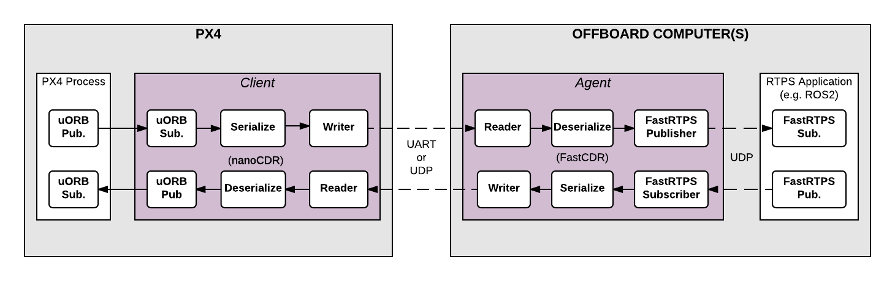

RTPS/ROS2 인터페이스: PX4-FastRTPS 브릿지
PX4-FastRTPS 브릿지는 PX4 구성요소와 (보드 외부의) Fast RTPS 프로그램(ROS2/ROS 프레임워크로 빌드한 결과 포함)간 uORB 메세지를 송수신하는 RTPS(Real Time Publish Subscribe) 인터페이스를 PX4에 추가했습니다.
RTPS는 OMG(Object Management Group)의 DDS(Data Distribution Service) 표준 기본 프로토콜입니다. 이 프로토콜은 Pub/Sub 패턴을 활용, 확장성, 실시간성, 의존성, 고성능, 상호운용 규격을 만족합니다. Fast RTPS는 최신 RTPS 프로토콜과 최소한의 DDS API를 크로스플랫폼 환경에 맞춰 경량화한 구현체입니다.
ROS2(Robot Operating System)의 미들웨어로 RTPS를 채택했습니다. Fast RTPS 브릿지는 센서의 값, 명령어 그리고 다른 기체의 정보를 공유하기 쉽게하는 ROS2와의 통합을 용이하게 합니다.
이 주제에서는 RTPS 브릿지 구조(와 ROS2/ROS 어플리케이션 파이프라인에서 어떻게 활용하는지)를 설명하겠습니다. 그리고 필요한 코드를 어떻게 컴파일할지도 알아보도록 하겠습니다:
- PX4의 변화를 지속적으로 살펴볼 간단한 Fast RTPS 어플리케이션 작성
- 여러 ROS2 노드와 PX4 연결(RTPS 브릿지와
px4_ros_com활용) - 추가로, ROS2와 ROS 브릿지
ros1_bridge를 활용, 여러 ROS("버전 1") 노드와 PX4 연결
RTPS는 언제 사용해야 할까?
비행 조종기와 보드 외부 요소간 지정 제한 시간내 실시간 정보 공유를 확실히하려면 RTPS를 사용해야합니다. 특히 보드 외부 프로그램이 PX4에서 (uORB 토픽 송수신으로) 동작하는 프로그램 구성요소의 피어로 동작할 경우 유용합니다.
사용가능한 경우는, 컴퓨터 비전을 위한 로보틱스 라이브러리들간의 통신, 기체 조종을 위한 액추에이터와 센서간의 실시간 데이터 통신입니다.
Fast RTPS는 MAVLink의 대체 수단이 아닙니다. (Fast RTPS는 일부 주변기기와 동작할 목적의 다른 기회가 열려있지만) MAVLink는 지상 통제국, 짐벌, 카메라 그 외의 보드 외부 요소와의 통신에 적합한 프로토콜로 남아있습니다
RTPS는 느린 채널(e.g. 무선 텔레메트리)에서도 사용할 수 있지만 채널 대역폭을 넘기지 않도록 조심해야 합니다.
아키텍쳐 개요
RTPS 브릿지
RTPS브릿지는 uORB와 RTPS 메시지를 매끄럽게 변환하여 PX4와 RTPS 어플리케이션간 주고 받는 메시지를 송수신합니다.

구조의 주된 요소는 상단 그림에 있는 클라이언트와 에이전트 프로세스입니다.
- Client는 비행 조종기에서 실행하는 PX4 미들웨어 데몬입니다. 다른 PX4 컴포넌트가 보내는 토픽을 지속적으로 수신하고, (UART 또는 UDP 포트로) Agent를 대상으로 업데이트 내용을 보냅니다. Agent로 부터 메시지도 받으며 PX4로 uORB 메시지를 내보내기도 합니다.
- Agent는 외부 컴퓨터에서 데몬으로 실행합니다. Client에서 보낸 uORB 업데이트 메시지를 검사한 후 RTPS에 실어 보냅니다. RTPS 어플리케이션에서 오는 "uORB" RTPS 메시지도 지속적으로 수신하며 Client에 전달합니다.
- Agent과 Client는 직렬 연결(UART) 또는 UDP 네트워크로 연결합니다. uORB 정보는 전송 전 CDR 직렬화 처리합니다(CDR 직렬화 수단은 다른 플랫폼들간 직렬 데이터 송수신에 활용하는 일반 형식을 제공합니다).
- Agent와 Fast RTPS 어플리케이션은 UDP를 통해 연결되며, 다른 장치에 있을수도 있습니다. 일반적인 구성에서는 와이파이나 USB로 Client에 연결된 동일한 시스템에 있을 것입니다 (예. 개발 컴퓨터, 리눅스 컴퓨터 또는 컴퓨터 보드).
ROS2/ROS 어플리케이션 파이프라인
ROS2를 위한 어플리케이션 파이프라인은 아주 직관적입니다. ROS2는 자체 통신 미들웨어로 DDS/RTPS를 사용하기 때문에, PX4 Fast RTPS 브릿지를 통해 PX4에서 내보내거나 지속 수신하는 ROS2 감청 유닛 또는 광역 전달 노드를 만들 수 있습니다. 이 내용을 아래의 그림으로 정리했습니다.
클라이언트와 에이전트(그리고 ROS 노드에서 계속)에서 사용하는 메시지 형식, 헤더, 소스 파일이 동일한 인터페이스 기술 언어(IDL) 파일에서 만들었는지 확인해야합니다.
px4_ros_com패키지는 ROS2에서 필요한 메시지, 헤더 생성에 필요한 기반입니다.

ROS 어플리케이션과 PX4를 통합하기 위한 구조는 아래에 나왔습니다.

ROS2와 ROS간의 메시지를 주고 받는 ros1_bridge 활용을 참고하십시오. ROS의 처음 버전이 RTPS를 지원하기 않기 때문에 필요합니다.
코드 생성
Fast RTPS 1.8.2 와 FastRTPSGen 1.0.4 또는 이후의 버전을 설치해야합니다. 그래야 필요한 코드를 만들 수 있습니다!
ROS-독립 어플리케이션
브릿지를 만들고 빌드하고 사용할 때 필요한 모든 코드는 PX4 펌웨어 컴파일 과정에서 자동으로 만듭니다.
Client 어플리케이션 또한 일반 빌드 과정의 일부로 컴파일하고 빌드하여 펌웨어에 들어갑니다. Agent는 대상 컴퓨터에 맞게 따로 직접 컴파일해야합니다.
브릿지 코드 또한 직접 만들수 있습니다. 대부분의 사용자는 그럴 필요가 없지만, 연결한 주제에서는 빌드 과정을 자세하게 안내하며, 이 내용을 통해 문제 해결의 도움을 받을 수 있습니다.
ROS2/ROS 어플리케이션
px4_ros_com 패키지를 빌드하면, ROS2 노드에서 PX4 uORB 메시지를 다룰 때 필요한 모든 요소가 나옵니다(ROS일 경우 ros1_bridge가 필요합니다). micrortps_agent와 (microtps_agent에서 필요한) IDL 파일이 들어간 PX4 RTPS 브릿지에서 필요로하는 모든 구성 요소가 다 들어있습니다.
ROS, ROS2의 메시지 정의 헤더와 인터페이스는 PX4 펌웨어의 uORB 메시지 대응 부분에 맞추는 px4_msgs 패키지에서 생성합니다. micrortps_agent에서 사용하는 IDL 파일을 만들 때 px4_ros_com에서 필요합니다.
px4_ros_com와 px4_msgs 패키지는 2개의 개별 브랜치를 갖고 있습니다.
- ROS2에서 사용하는
master브랜치. 이 브랜치는 PX4와 ROS2 노드를 연결할 ROS2 메시지와 IDL 파일을 만드는 코드가 들어있습니다. - ROS에서 사용하는
ros1브랜치. 이 브랜치는ros1_bridge로 PX4와 ROS의 데이터를 공유하는데, 이를 활용할 ROS 메시지 헤더와 소스 파일을 생성하는 코드가 들어있습니다.
px4_ros_com의 두 브랜치 모두 감청 유닛과 광역 전달 예제 노드도 들어있습니다.
지원하는 uORB 메시지
생성된 브릿지 코드는 특정 토픽들에 대해 RTPS를 통해 Pub/Sub이 가능하도록 합니다. ROS와 non-ROS 어플리케이선 모두 해당됩니다.
자동 코드 생성을 위해 Firmware/msg/tools/ 디렉토리에 uorb_rtps_message_ids.yaml 파일이 있습니다(yaml). 이 파일은 RTPS에 사용될 uORB 메시지의 집합을 정의 합니다. 메시지의 송, 수신 여부와 DDS/RTPS 미들웨어에 사용될 RTPS ID를 정의합니다.
모든 메시지들에 대해 RTPS ID가 설정해야 합니다.
rtps:
- msg: actuator_armed
id: 0
- msg: actuator_control
id: 1
- ...
- msg: airspeed
id: 5
send: true
- msg: battery_status
id: 6
send: true
- msg: camera_capture
id: 7
- msg: camera_trigger
id: 8
receive: true
- ...
- msg: sensor_baro
id: 63
receive: true
send: true
ROS2 Dashing에서의 API 변경으로
rosidl_generate_interfaces()(px4_msgs에서의) CMake 모듈을 활용하여 microRTPS 에이전트 생성에 필요한 IDL 파일을 만들 수 있습니다. PX4 펌웨어는 PX4 빌드 과정에서만 활용하는 IDL 파일 생성 과정의 서식이 들어있습니다.
px4_msgs빌드 과정에서는 ROS2/ROS에 활용할 약간 다른 IDL 파일(PX4 펌웨어 용으로 빌드)을 만듭니다. uorb_rtps_message_ids.yaml는 PascalCased방식으로 메시지 이름을 짓습니다(이름을 바꾸는 것은 client-agent 통신과는 상관없지만 ROS2에는 크리티컬합니다, 따라서 메시지 네이밍은 PascalCase 컨벤션을 따라야합니다). 새 IDL 파일은 송수신한 메세지를 되돌립니다(메시지를 클라이언트에서 보냈을 때, 에이전트에서 보내거나 그 반대의 경우로도 가능하기 때문에 필요).
클라이언트 (PX4 펌웨어)
Client 소스코드는 일반적인 빌드 과정을 거쳐 생성, 컴파일, 빌드하여 PX4 펌웨어에 넣습니다.
NuttX/픽스호크 비행체 컨트롤러를 대상으로 펌웨어를 빌드하려면 설정 대상에서 _rtps 대상을 사용하십시오. 예를 들어, RTPS를 px4_fmu-v4에 빌드하려면:
make px4_fmu-v4_rtps
SITL 대상 펌웨어를 빌드하려면:
make px4_sitl_rtps
Client 어플리케이션은 NuttShell/System Console에서 실행할 수 있습니다. 명령 문법은 다음과 같습니다(여러 인자의 변수 값을 지정할 수 있음):
> micrortps_client start|stop|status [options]
-t <transport> [UART|UDP] Default UART
-d <device> UART device. Default /dev/ttyACM0
-l <loops> How many iterations will this program have. -1 for infinite. Default -1.
-w <sleep_time_ms> Time in ms for which each iteration sleep. Default 1ms
-b <baudrate> UART device baudrate. Default 460800
-p <poll_ms> Time in ms to poll over UART. Default 1ms
-r <reception port> UDP port for receiving. Default 2019
-s <sending port> UDP port for sending. Default 2020
-i <ip_address> Select IP address (remote) values: <x.x.x.x>. Default: 127.0.0.1
기본적으로 Client는 데몬으로 동작하지만, 직접 실행해야 할 수도 있습니다. PX4 펌웨어 초기화 코드는 나중에 Client를 영구 실행 데몬 프로세스로 자동 시작합니다.
예를 들어 UDP로 에이전트에 SITL 연결하는 Client 데몬을 실행하려면 데몬을 다음과 같이 시작하십시오:
micrortps_client start -t UDP
Fast RTPS interface를 사용하는 ROS에 독립적인 오프보드 에이전트
Agent 코드는 PX4 펌웨어와 관련된 것을 빌드할 때 자동적으로 생성됩니다. 소스코드는 여기서 찾을 수 있습니다. build/
Agent 어플리케이션을 필드하기 위해서는 코드를 컴파일 하세요.
cd build/<target-platform>/src/modules/micrortps_bridge/micrortps_client/micrortps_agent
mkdir build && cd build
cmake ..
make
Qualcomm Snapdragon Flight 플랫폼을 위한 크로스 컴파일을 여기를 참고하세요.
Agent 명령어는 아래와 같습니다:
$ ./micrortps_agent [options]
-t <transport> [UART|UDP] Default UART.
-d <device> UART device. Default /dev/ttyACM0.
-w <sleep_time_us> Time in us for which each iteration sleep. Default 1ms.
-b <baudrate> UART device baudrate. Default 460800.
-p <poll_ms> Time in ms to poll over UART. Default 1ms.
-r <reception port> UDP port for receiving. Default 2019.
-s <sending port> UDP port for sending. Default 2020.
Agent를 실행하려면 micrortps_agent를 Client에 연결하기 위한 적절한 옵션을 주어 실행하세요(리눅스 디바이스는 기본적으로 UART 포트를 통해 Client에 연결합니다).
예를 들어, UDP로 연결하는 micrortps_agent을 시작하려면, 다음 명령을 실행하십시오:
./micrortps_agent -t UDP
Agent와 ROS2 미들웨어
pxr_ros_com 빌드 과정에서는 px4_msgs 패키지가 동일한 ROS2 작업 공간(또는 다른 ROS2 작업 공간에 놓여)에 빌드 결과물을 두기 때문에 필요에 따라 에이전트 프로그램을 자동으로 만들어 빌드합니다. colcon 빌드 툴을 활용하여 설치하므로 위와 동일한 방식으로도 동작합니다. 자세한 빌드 구조 내용은 px4_ros_com 패키지 빌드를 참고하십시오.
px4_ros_com와 px4_msgs 패키지 빌드
개발용 컴퓨터에 ROS2와 ROS 환경을 설치하고 세팅하세요, 그리고 px4_ros_com와 px4_msgs 저장소를 master와 ros1브랜치에 독립적으로 클론하세요(더 자세한 정보는 여기를 보세요).
ROS2는 마스터 브랜치만 필요합니다(ROS는 두 브랜치 다 필요합니다).
ROS와 ROS2 설치와 의존성
이 설치 빌드 안내서는 ROS Melodic과 ROS2 Dashing을 다룹니다(ROS2 Ardent, Bouncy, Crystal은 지원이 끝나 다루지 않습니다).
ROS Melodic과 ROS2 Dashing(공식 지원)을 Ubuntu 18.04 머신에 설치하려면 다음 각 링크의 내용을 따르십시오:
- ROS Melodic을 설치하십시오
- ROS2 Dashing을 설치하십시오
이 설치과정은 colcon 빌드 툴 설치가 필요할 것 입니다. 설치되지 않으면 수동으로 설치해주세요.
sudo apt install python3-colcon-common-extensionsEigen3를 변환 라이브러리에서 활용하므로 eigen3_cmake_module 모듈도 필요합니다:
sudo apt install ros-dashing-eigen3-cmake-modulesetuptools를 설치해야합니다(apt 또는 apt 활용):
sudo pip3 install -U setuptools데비안 저장소에서
ros1_bridge패키지를 설치하지 마십시오. 이 패키지는 소스 코드를 빌드해야합니다.
작업 영역 설정
ROS와 ROS2가 다른 환경을 필요로 하기 때문에 각 ROS를 위한 워크스페이스를 분리할 필요가 있습니다. 예:
ROS2 워킹 스페이스는 다음과 같이 만드세요
mkdir -p ~/px4_ros_com_ros2/src그리고 ROS2 (
master) 브랜치를/src디렉토리에 클론하세요.$ git clone https://github.com/PX4/px4_ros_com.git ~/px4_ros_com_ros2/src/px4_ros_com # clones the master branch $ git clone https://github.com/PX4/px4_msgs.git ~/px4_ros_com_ros2/src/px4_msgsROS도 똑같지만, 다른 디렉토리를 생성해 다른 브랜치를 클론하세요.
mkdir -p ~/px4_ros_com_ros1/srcROS2 (
ros1) 브랜치를/src디렉토리에 클론하세요.$ git clone https://github.com/PX4/px4_ros_com.git ~/px4_ros_com_ros1/src/px4_ros_com -b ros1 # clones the 'ros1' branch $ git clone https://github.com/PX4/px4_msgs.git ~/px4_ros_com_ros1/src/px4_msgs -b ros1
작업 영역 빌드하기
px4_ros_com/scripts 디렉터리는 두 작업 영역을 빌드할 때 활용하는 여러 스크립트가 들어있습니다.
두 작업 영역을 단일 스크립트로 빌드하려면 build_all.bash를 사용하십시오. source build_all.bash --help 명령으로 사용법을 확인하십시오. 가장 일반적인 사용법은 ROS(1) 작업 영역 경로와 PX4 펌웨어 디렉터리 경로를 전달하는 방법입니다:
$ source build_all.bash --ros1_ws_dir <path/to/px4_ros_com_ros1/ws>
--verbose인자는 colcon 빌드 출력 전체 내용을 보여줍니다.Note 빌드 과정 도중 다른 환경 설정을 적용해야 하는 각 빌드 과정 단계에 따라 콘솔의 새 탭을 엽니다.
일부를 빌드하려면 아래 별도 스크립트를 사용할 수 있습니다:
ros1_bridge를 빌드할build_ros1_bridge.bash.px4_ros_com과px4_msgs의ros1브랜치를 가져온 위치에 ROS1 작업 영역을 빌드하는build_ros1_workspace.bash(px4_ros_com의ros1브랜치에만 있음).px4_ros_com과px4_msgs의master브랜치를 가져온 위치에 ROS2 작업 영역을 빌드하는build_ros2_workspace.bash.
아래 단계는 어떻게 직접 패키지를 빌드하는 지 보여줍니다(이해를 돕는 용도로만 제공함):
px4_ros_com_ros2디렉터리를 대상으로cd명령을 실행하고 ROS2 환경에 필요한 모든 설정을 적용(source)하십시오. 앞서 작업 영역을 설정했다고 하더라도 신경쓰지 마십시오:source /opt/ros/dashing/setup.bashROS2 작업 영역에 빌드할 수 있도록
ros1_bridge패키지를 원격에서 가져오십시오:git clone https://github.com/ros2/ros1_bridge.git -b dashing ~/px4_ros_com_ros2/src/ros1_bridgeros1_bridge패키지를 제외하고,px4_ros_com와px4_msgs패키지를 빌드하세요.colcon build --symlink-install --packages-skip ros1_bridge --event-handlers console_direct+--event-handlers console_direct+는 단지colcon빌드 과정을 자세하게 보여주는 용도로만 사용되고 원하지 않으면 삭제하면 됩니다.이제 ROS 패키지를 빌드하십시오. 빌드 과정 진행을 위해 새 터미널 창을 열고 시스템에 설치한 ROS(1) 환경 전용 설정 값을 적용하십시오:
source /opt/ros/melodic/setup.bash새로운 터미널에서,
px4_ros_com와px4_msgs패키지를 빌드하세요.cd ~/px4_ros_com_ros1 && colcon build --symlink-install --event-handlers console_direct+ros1_bridge를 빌드하기 전, 새 터미널을 열고 아래 순서대로 환경과 작업 영역을 설정하십시오:source ~/px4_ros_com_ros1/install/setup.bash source ~/px4_ros_com_ros2/install/setup.bash이제
ros1_bridge를 빌드하십시오. 참고로, 빌드 과정은 메모리를 많이 소비합니다. 한정 자원을 지닌 환경에서는, 병렬 처리 건수를 줄이십시오(예: 환경 변수 설정MAKEFLAGS=-j1). 자세한 빌드 과정은 ros1_bridge 패키지의 빌드 명령을 참고하십시오.cd ~/px4_ros_com_ros2 && colcon build --symlink-install --packages-select ros1_bridge --cmake-force-configure --event-handlers console_direct+
작업 영역 정리하기
빌드가 끝나면 새 빌드를 진행하기 전 삭제할 파일이 있습니다 (예. 코드의 일부를 수정하고 다시 필요하려고 할 때). colcon는 현재 생성한 build, install, log 디렉터리를 자동으로 지우는 수단이 없습니다. 직접 지우십시오.
정리 과정을 쉽게 처리하는 (px4_ros_com/scripts의) clean_all.bash 스크립트를 제공합니다. 가장 일반적인 활용법은 ROS(1) 작업 영역 디렉터리 경로(해당 경로가 기본 경로가 아니기 때문)를 전달하는 방법입니다:
$ source clean_all.bash --ros1_ws_dir <path/to/px4_ros_com_ros1/ws>
Fast RTPS 감청 어플리케이션 만들기
한번 Client (비행 컨트롤러의) 와 Agent (오프보드 컴퓨터의)가 동작하고 연결되기 시작하면, Fast RTPS 어플리케이션은 RTPS를 이용하여 uORB 토픽들을 퍼블리시하고 구독할 수 있게 됩니다.
이 예제는 sensor_combined 토픽을 구독하고 갱신결과를 출력하는 Fast RTPS "리스너" 어플리케이션을 어떻게 만들지 보여줍니다. 연결한 RTPS 어플리케이션은 같은 네트워크내의 어떤 컴퓨터에 대해 Agent로 동작할 수 있습니다 이 예제에서 Agent와 Listener application은 동일한 컴퓨터에서 실행합니다.
fastrtpsgen 스크립트는 IDL 메시지 파일을 이용해 간단한 RTPS 어플리케이션을 만들 때 활용할 수 있습니다.
RTPS 메시지는 IDL 파일에 정의해두고 fastrtpsgen 명령으로 C++ 언어로 작성한 코드를 컴파일합니다. 브릿지 코드 빌드 과정에서 송수신할 uORB 메세지 파일에 대한 IDL 파일을 만듭니다(build/BUILDPLATFORM/src/modules/micrortps_bridge/micrortps_agent/idl/*.idl 참고). PX4와 통신할 Fast RTPS 어플리케이션을 만들 때 IDL 파일이 필요합니다.
어플리케이션을 만들려면 다음 명령을 입력하십시오:
cd /path/to/PX4/Firmware/build/px4_sitl_rtps/src/modules/micrortps_bridge
mkdir micrortps_listener
cd micrortps_listener
fastrtpsgen -example x64Linux2.6gcc ../micrortps_client/micrortps_agent/idl/sensor_combined.idl
이 명령어는 기본적인 Subscriber와 Publisher를 만들고, 이것을 실행하기 위한 메인 어플리케이션을 만듭니다. sensor_combined 토픽으로 부터 오는 데이터를 출력하기 위해서는 sensor_combined_Subscriber.cxx 메소드의 onNewDataMessage()를 수정하세요.
void sensor_combined_Subscriber::SubListener::onNewDataMessage(Subscriber* sub)
{
// Take data
sensor_combined_ st;
if(sub->takeNextData(&st, &m_info))
{
if(m_info.sampleKind == ALIVE)
{
// Print your structure data here.
++n_msg;
std::cout << "\n\n\n\n\n\n\n\n\n\n";
std::cout << "Sample received, count=" << n_msg << std::endl;
std::cout << "=============================" << std::endl;
std::cout << "gyro_rad: " << st.gyro_rad().at(0);
std::cout << ", " << st.gyro_rad().at(1);
std::cout << ", " << st.gyro_rad().at(2) << std::endl;
std::cout << "gyro_integral_dt: " << st.gyro_integral_dt() << std::endl;
std::cout << "accelerometer_timestamp_relative: " << st.accelerometer_timestamp_relative() << std::endl;
std::cout << "accelerometer_m_s2: " << st.accelerometer_m_s2().at(0);
std::cout << ", " << st.accelerometer_m_s2().at(1);
std::cout << ", " << st.accelerometer_m_s2().at(2) << std::endl;
std::cout << "accelerometer_integral_dt: " << st.accelerometer_integral_dt() << std::endl;
std::cout << "magnetometer_timestamp_relative: " << st.magnetometer_timestamp_relative() << std::endl;
std::cout << "magnetometer_ga: " << st.magnetometer_ga().at(0);
std::cout << ", " << st.magnetometer_ga().at(1);
std::cout << ", " << st.magnetometer_ga().at(2) << std::endl;
std::cout << "baro_timestamp_relative: " << st.baro_timestamp_relative() << std::endl;
std::cout << "baro_alt_meter: " << st.baro_alt_meter() << std::endl;
std::cout << "baro_temp_celcius: " << st.baro_temp_celcius() << std::endl;
}
}
}
리눅스 어플리케이션을 빌드하고 실행하려면:
make -f makefile_x64Linux2.6gcc
bin/*/sensor_combined_PublisherSubscriber subscriber
이제 센서 정보가 나타나야합니다:
Sample received, count=10119
Received sensor_combined data
=============================
gyro_rad: -0.0103228, 0.0140477, 0.000319406
gyro_integral_dt: 0.004
accelerometer_timestamp_relative: 0
accelerometer_m_s2: -2.82708, -6.34799, -7.41101
accelerometer_integral_dt: 0.004
magnetometer_timestamp_relative: -10210
magnetometer_ga: 0.60171, 0.0405879, -0.040995
baro_timestamp_relative: -17469
baro_alt_meter: 368.647
baro_temp_celcius: 43.93
감청 어플리케이션에서 아무 내용도 출력하지 않는다면 클라이언트를 실행하고 있는지 확인하십시오.
ROS2 감청 유닛 만들기
px4_ros_com가 빌드되면, 생성된 micro-RTPS 에이전트 앱과 px4_msgs로 부터 생성된 ROS2 메시지 헤더, 소스를 사용할 수 있습니다. 대응하는 uORB와 1:1로 매칭됩니다.
ROS2에서 감청 노드를 만드려면 px4_ros_com/src/listeners의 sensor_combined_listener.cpp 를 참고하십시오.
#include <rclcpp/rclcpp.hpp>
#include <px4_msgs/msg/sensor_combined.hpp>
위의 헤더들은 ROS2 미들웨어에 접속하기 위해 필요한 C++ 라이브러리들을 포함합니다. 필요한 메시지 헤더파일들 또한 포함합니다.
/**
* @brief Sensor Combined uORB topic data callback
*/
class SensorCombinedListener : public rclcpp::Node
{
rclcpp::Node의 서브클래스로 SensorCombinedListener 클래스를 만드는 것 입니다.
public:
explicit SensorCombinedListener() : Node("sensor_combined_listener") {
subscription_ = this->create_subscription<px4_msgs::msg::SensorCombined>(
"SensorCombined_PubSubTopic", 10,
[this](const px4_msgs::msg::SensorCombined::UniquePtr msg) {
std::cout << "\n\n\n\n\n\n\n\n\n\n\n\n\n\n\n\n\n\n\n\n\n\n\n\n";
std::cout << "RECEIVED SENSOR COMBINED DATA" << std::endl;
std::cout << "=============================" << std::endl;
std::cout << "ts: " << msg->timestamp << std::endl;
std::cout << "gyro_rad[0]: " << msg->gyro_rad[0] << std::endl;
std::cout << "gyro_rad[1]: " << msg->gyro_rad[1] << std::endl;
std::cout << "gyro_rad[2]: " << msg->gyro_rad[2] << std::endl;
std::cout << "gyro_integral_dt: " << msg->gyro_integral_dt << std::endl;
std::cout << "accelerometer_timestamp_relative: " << msg->accelerometer_timestamp_relative << std::endl;
std::cout << "accelerometer_m_s2[0]: " << msg->accelerometer_m_s2[0] << std::endl;
std::cout << "accelerometer_m_s2[1]: " << msg->accelerometer_m_s2[1] << std::endl;
std::cout << "accelerometer_m_s2[2]: " << msg->accelerometer_m_s2[2] << std::endl;
std::cout << "accelerometer_integral_dt: " << msg->accelerometer_integral_dt << std::endl;
});
}
이 코드는 sensor_combined uORB 메세지(DDS 메세지와 유사)를 받았을 때 호출하는 함수를 만듭니다. 이 함수는 메세지를 받을 때마다 메세지 필드 내용을 출력합니다.
private:
rclcpp::Subscription<px4_msgs::msg::SensorCombined>::SharedPtr subscription_;
};
위 코드에서는 호환성을 가진 하나 이상의 ROS 송신자에 대응 가능한 sensor_combined_topic으로 지속 감청 연결을 만듭니다.
int main(int argc, char *argv[])
{
std::cout << "Starting sensor_combined listener node..." << std::endl;
setvbuf(stdout, NULL, _IONBF, BUFSIZ);
rclcpp::init(argc, argv);
rclcpp::spin(std::make_shared<SensorCombinedListener>());
rclcpp::shutdown();
return 0;
}
ROS 노드의 SensorCombinedListener 클래스 초기화는 main 함수에서 수행합니다.
ROS2 광역 전달 노드 만들기
ROS2 광역 전달 노드는 DDS/RTPS/PX4 네트워크에 데이터를 내보냅니다.
px4_ros_com/src/listeners의 debug_vect_advertiser.cpp 예제를 살펴보겠습니다:
#include <chrono>
#include <rclcpp/rclcpp.hpp>
#include <px4_msgs/msg/debug_vect.hpp>
using namespace std::chrono_literals;
debug_vect 메세지 헤더와 필요한 헤더를 함께 선언합니다.
class DebugVectAdvertiser : public rclcpp::Node
{
rclcpp::Node의 서브클래스로 DebugVectAdvertiser 클래스를 만드는 것 입니다.
public:
DebugVectAdvertiser() : Node("debug_vect_advertiser") {
publisher_ = this->create_publisher<px4_msgs::msg::DebugVect>("DebugVect_PubSubTopic", 10);
auto timer_callback =
[this]()->void {
auto debug_vect = px4_msgs::msg::DebugVect();
debug_vect.timestamp = this->now().nanoseconds() * 1E-3;
std::string name = "test";
std::copy(name.begin(), name.end(), debug_vect.name.begin());
debug_vect.x = 1.0;
debug_vect.y = 2.0;
debug_vect.z = 3.0;
RCLCPP_INFO(this->get_logger(), "\033[97m Publishing debug_vect: time: %f x:%f y:%f z:%f \033[0m",
debug_vect.timestamp, debug_vect.x, debug_vect.y, debug_vect.z);
this->publisher_->publish(debug_vect);
};
timer_ = this->create_wall_timer(500ms, timer_callback);
}
private:
rclcpp::TimerBase::SharedPtr timer_;
rclcpp::Publisher<px4_msgs::msg::DebugVect>::SharedPtr publisher_;
};
메시지를 송신할 때 사용할 함수를 만듭니다. 메시지는 타이머 기반으로 동작하는 콜백 함수에서 초당 2개씩 보냅니다.
int main(int argc, char *argv[])
{
std::cout << "Starting debug_vect advertiser node..." << std::endl;
setvbuf(stdout, NULL, _IONBF, BUFSIZ);
rclcpp::init(argc, argv);
rclcpp::spin(std::make_shared<DebugVectAdvertiser>());
rclcpp::shutdown();
return 0;
}
ROS 노드에서의 DebugVectAdvertiser 클래스 초기화는 main 함수에서 수행합니다.
ROS(1) 감청 유닛 만들기
ROS 노드 만들기 예제는 많이 알려져 있으며, 문서화가 잘 되어있습니다. sensor_combined 메시지를 위한 ROS 리스너를 위한 예제가 ros1 브랜치에서 px4_ros_com/src/listeners에 있습니다.
ROS-독립 어플리케이션 예제와 테스트
아래의 예제들은 이 섹션에서 설명한 기능들을 실제로 어떻게 사용하는지에 대한 추가적인 정보를 제공합니다.
- Throughput test: 브릿지의 처리량을 측적하는 간단한 테스트입니다.
ROS2/ROS와 브릿징한 PX4-FastRPTS 테스트하기
패키지를 빠르게 테스트하려면 (PX4 SITL와 Gazebo를 사용):
PX4 SITL와 가제보를 빌드하십시오
make px4_sitl_rtps gazebo하나의 터미널에서 ROS2 환경과 작업 영역의 설정을 가져오고
ros1_bridge를 실행하십시오(ROS2와 ROS가 서로 통신할 수 있게 합니다). 또한roscore를 실행할 위치인ROS_MASTER_URI를 설정하십시오:$ source /opt/ros/dashing/setup.bash $ source ~/px4_ros_com_ros2/install/local_setup.bash $ export ROS_MASTER_URI=http://localhost:11311 $ ros2 run ros1_bridge dynamic_bridge다른 터미널에서 ROS 작업 영역 설정을 적용하고
sensor_combined감청 노드를 실행하십시오.roslaunch를 실행했다면roscore도 자동으로 시작합니다:$ source ~/px4_ros_com_ros1/install/setup.bash $ roslaunch px4_ros_com sensor_combined_listener.launch터미널에서 ROS2 작업 영역의 설정을 적용하고
micrortps_agent데몬을 시작하면서 UDP를 전송 프로토콜로 지정하십시오:$ source ~/px4_ros_com_ros2/install/setup.bash $ micrortps_agent -t UDPNuttShell/System Console에서는 UDP를 사용하는
micrortps_client를 실행하세요.> micrortps_client start -t UDP이제 ROS 리스너를 실행한 콘솔에서 데이터가 출력되는 것을 볼 수 있을 것입니다.
RECEIVED DATA FROM SENSOR COMBINED ================================ gyro_rad[0]: 0.00341645 gyro_rad[1]: 0.00626475 gyro_rad[2]: -0.000515705 gyro_integral_dt: 4739 accelerometer_timestamp_relative: 0 accelerometer_m_s2[0]: -0.273381 accelerometer_m_s2[1]: 0.0949186 accelerometer_m_s2[2]: -9.76044 accelerometer_integral_dt: 4739 Publishing back...rostopic hz로 메시지의 속도를 확인할 수 있습니다.sensor_combined의 경우average rate: 248.187 min: 0.000s max: 0.012s std dev: 0.00147s window: 2724 average rate: 248.006 min: 0.000s max: 0.012s std dev: 0.00147s window: 2972 average rate: 247.330 min: 0.000s max: 0.012s std dev: 0.00148s window: 3212 average rate: 247.497 min: 0.000s max: 0.012s std dev: 0.00149s window: 3464 average rate: 247.458 min: 0.000s max: 0.012s std dev: 0.00149s window: 3712 average rate: 247.485 min: 0.000s max: 0.012s std dev: 0.00148s window: 3960다음과 같이
sensor_combinedROS2 리스너를 테스를 할 수 있습니다.$ source ~/px4_ros_com_ros2/install/local_setup.bash $ ros2 launch px4_ros_com sensor_combined_listener.launch.py
이 작업은 콘솔에 출력 중인 데이터를 가져옵니다.
누군가가
build_all.bash스크립트를 사용하면, 필요한 모든 터미널을 자동으로 열고 모든 환경 변수 설정을 적용하여 각 터미널에서 제각각의 앱이 올바른 설정으로 동작하게 합니다.
문제 해결
클라이언트에서 선택한 UART 포트가 사용 중이라고 할 경우
만약 선택한 UART 포트가 사용할 수 없는 상태이면, MAVLink 어플리케이션이 이미 실행중일 가능성이 있습니다. MAVLink와 RTPS 연결을 모두 필요로 하다면 다른 포트를 사용하도록 하거나 포트를 공유할 수 있도록 설정해야 합니다.
개발 과정에서 브릿지 시험을 허용하도록 재빠르게 임시로 조치하는 방법은 NuttShell에서 MAVLink를 중단하는 방법입니다:
sh mavlink stop-all
에이전트 빌드 안됨, fastrtpsgen 찾을 수 없음
Agent 코드는 fastrtpsgen이라고 불리는 Fast RTPS 툴을 사용해 생성합니다.
만약 Fatt RTPS를 기본 경로에 설치하지 않았다면 make를 수행하기 이전에 FASTRTPSGEN_DIR 환경변수에 설치된 디렉토리를 설정해주어야 합니다.
리눅스/Mac 에서는 아래와 같이 수행하면 됩니다.
export FASTRTPSGEN_DIR=/path/to/fastrtps/install/folder/bin
Fast RTPS 를 기본 경로에 설치했다면 문제가 나타나지 않아야합니다.
OBC(온보드 컴퓨터)에서 UART 활성화하기
라즈페이파이나 다른 OBC에서 UART 전송을 위해서는 시리얼 포트를 활성화해야만 합니다.
userid가dialout그룹의 멤버인지 확인하세요(라즈베리파이에서는 기본값이 pi 입니다).groups pi sudo usermod -a -G dialout pi일부 라즈베리파이에서는 그 포트를 사용하고 있는 GPIO 시리얼 콘솔을 멈춰야 합니다.
sudo raspi-config보여지는 메뉴에서 Interfacing options > Serial로 이동합니다. Would you like a login shell to be accessible over serial? 질문에 대해서는 NO를 선택하세요. 확인하고 재부팅하세요.
커널에서 UART 확인하기
sudo vi /boot/config.txtenable_uart값이 1로 설정되어 있는지 확인하세요.enable_uart=1